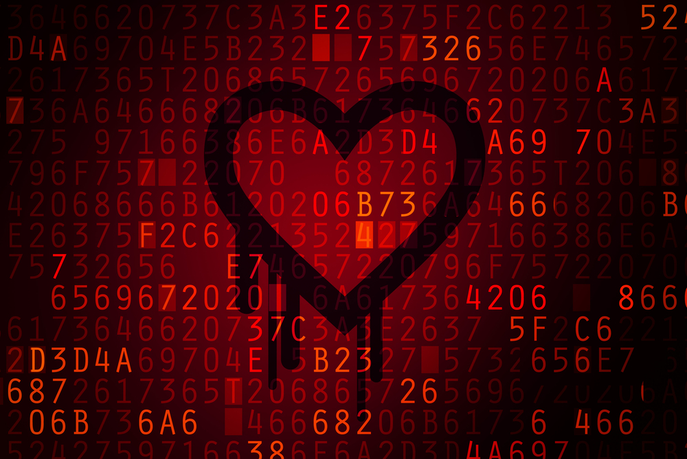

PCSAFETY
История Вирусных и Антивирусных программ
Зародившись как явление весьма необычное, как компьютерный феномен, в 1980-х годах, примитивные вирусы постепенно превращались в сложные технологические разработки, осваивали новые ниши, проникали в компьютерные сети. Идея вируса, заражающего другие программы и компьютеры, за двадцать лет трансформировалась в криминальный бизнес. Будучи изначально творчеством вирусописателей-исследователей, компьютерные вирусы стали оружием в руках интернет-преступников. Одновременно происходило зарождение и становление индустрии антивирусной. Появившись в конце 1980-х, первые антивирусные разработки получили большую популярность, через 10 лет став обязательным к использованию программным обеспечением. Программисты, увлечённые разработкой антивирусных программ, становились основателями антивирусных компаний, небольшие и совсем мелкие компании выросли, некоторые из них стали гигантами индустрии. Конечно, повезло не всем — многие по разным причинам «сошли с дистанции» или были поглощены более крупными компаниями. Но антивирусная индустрия всё еще продолжает формироваться, и её, скорее всего, ждут большие изменения. Помимо интереса теоретического, история развития вирусов может принести и практическую пользу — по ней можно предсказывать будущее развитие вредоносных программ, включая компьютерные в широком смысле этого слова, например, дальнейшую эволюцию вирусов на мобильных телефонах, проблемы безопасности «умных» домов будущего и т.п. Первый этап В 80-е годы поток новых вирусов был мизерным - несколько вирусов в месяц, никаких сложностей с точки зрения программирования антивируса не было.
В 1990 году появилось новое поколение вирусов - полиморфные вирусы, в которых отсутствовал постоянный код. И вскоре антивирусные эксперты изобрели специальные алгоритмические языки, способные распознать в зараженном файле даже полиморфный вирус. Параллельно с разработкой сканеров, шли и эксперименты с другими "лекарствами". В начале 90-х были популярны программы вакцины (или вакцинаторы). Они работали по тому же принципу, что и медицинские вакцины - делалась некая «прививка» и вирус больше не мог заражать «привитый» или вакцинированный файл. 1992 год стал переломным годом в эволюции антивирусных средств. Был разработан эмулятор кода. Полиморфные вирусы после расшифровки всегда одинаковы и нужно было придумать нечто, что смогло бы «снять» зашифрованную часть и позволило добраться до постоянного тела вируса. Первым антивирусом с эмулятором стал AVP.На рубеже 1992-1993 гг. количество вирусов перевалило за 1000. И примерно в тоже время разработчики антивирусов задумались о том, как можно обнаруживать новые (неизвестные) вирусы. Первым антивирусом, который мог обнаруживать неизвестные вирусы стал Lie Detector Евгения Сусликова, такие антивирусы получили название эвристические анализаторы. Таким образом, к середине 90-х были придуманы и разработаны все основные технологии, которые применяются до сих пор.
Второй этап Развитая многозадачность появившихся в середине 90-х годов операционных систем подтолкнула разработчиков к созданию таких антивирусов, которые бы проверяли файлы на лету (при обращении к ним) - On-Access Scanner или мониторов. XXI век принес, пожалуй, самые большие изменения в индустрию антивирусов - умер сам термин «вирус». На смену пришло понятие вредоносная программа. Постепенно поменялась цель написание вирусов - от простого хулиганства или самоутверждения цель сместилась в область финансов и как следствие классические вирусы, заражающие файлы, практически исчезли. Интернет повлиял не только на вирусы, развитие сетей повлияло и на стратегию защиты. Стала доминировать эшелонированная защита с обязательной защитой периметра - интернет-шлюзов и почтовых серверов. Постепенно акцент был смещен с защиты только рабочих станций именно на эти узлы защиты. Таким образом, можно сделать вывод, что современные антивирусные программы, являющиеся полноценными пакетами, предоставляющими в основном комплексную защиту компьютера, являются собранием всех идей и методов защиты, созданных ранее. Ну а в декабре все того же 1989 года случилась первая эпидемия трояна Aids Information Diskette (дискета с информацией о СПИДе). Подобно ахейцам из гомеровской "Илиады", которые проникли за стены Трои, спрятавшись в коне, троянская программа маскируется под безобидные файлы. В данном случае "троянский конь" был идеальный: никто не ожидал подвоха от дискеты с информацией о страшном заболевании, которое недавно обрушилось на человечество. Автор AIDS использовал для распространения настоящую почту: конверт, марки, почтальона. Получив доступ к адресам подписчиков журнала PC Business World и участников конференции ВОЗ по вопросам СПИДа, он разослал 20 тысяч дискет с вирусом. Троян внедрялся после запуска, создавая свои скрытые файлы и модифицируя системные. Через какое-то время все файлы на жестком диске становились недоступными - кроме одного, в котором автор заразы Джозеф Попп предлагал прислать ему деньги.
Третье тысячелетие началось с признания в любви. Оказалось, ее не хватало как минимум трем миллионам пользователей по всему миру. По крайней мере они без раздумий ринулись смотреть вложенный в письмо файл LOVE-LETTER-FOR-YOU.txt.vbs. Почтовый червь ILOVEYOU стал самым разрушительным зловредом в мире, за что попал в Книгу рекордов Гиннесса. В отличие от макровирусов, эта программка распространялась не как зараженный вордовский документ, но как VBS*-файл. Он стирал файлы на жестком диске, поверх записывал собственные копии и через Outlook Express распространялся дальше. Следующим пользователям письма приходили со знакомых адресов, они открывали их, а заодно и дорогу червю. Нанесенный ущерб-около 10 миллиардов долларов. Компьютерный вирус I LOVE YOU по своей сути является одним из представителей класса вирусов-червем, распространяющемся по системе электронной почты и использующий для своего функционирования встроенные функции Visual Basic из состава MS Windows 98 (при наличии установленного приложения Visual Basic и в MS Windows 95). Он интересен тем, что является первым из серии подобных вирусов. В дальнейшем куски его кода и идеи, реализованные в нем, стали широко использоваться в других вирусах и в его клонах. Технологии защиты в эти годы были сравнительно простые. Хакеры писали новую вредоносную программу - она попадала в антивирусную лабораторию, где реверс-инженеры занимались обратным программированием, обновляя антивирусные базы.